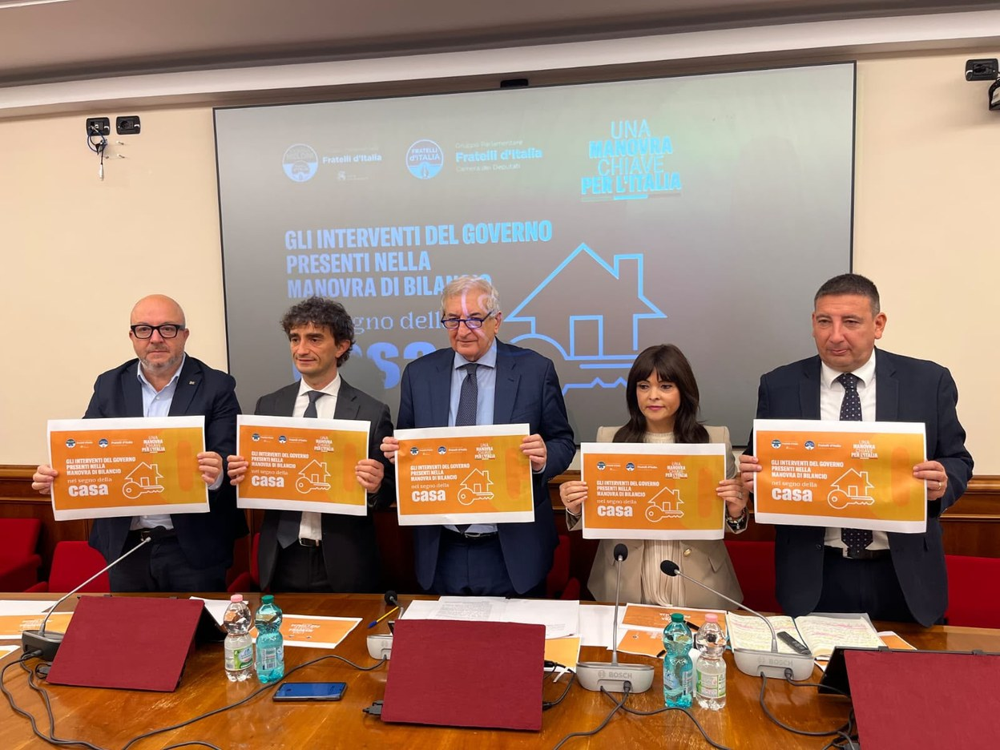

Vivienda, impuesto fijo al 5% y Fondo para la primera vivienda en los presupuestos: «respuestas concretas a la emergencia habitacional»
Traducción no oficial del comunicado publicado en italiano.
El 18 de noviembre de 2026, en la rueda de prensa de los grupos parlamentarios de Fratelli d’Italia sobre las políticas de vivienda, Sigismondi presenta las medidas sobre la vivienda de la ley de presupuestos en examen en el Parlamento. El impuesto fijo sobre los alquileres de renta pactada baja del 10 al 5 por ciento, y al 1 por ciento para los inquilinos menores de 36 años, y el Fondo de garantía para la primera vivienda recibe nueva financiación para ayudar a los jóvenes a acceder a la hipoteca.
Por qué importa: En Roma la cuota de la hipoteca absorbe el 36 por ciento de la renta, en Milán hasta el 45, y el alquiler supera de media el 30 por ciento del sueldo. Las medidas están en examen en el Parlamento y buscan reducir este peso para familias y jóvenes.

«La vivienda es central en la acción del Gobierno Meloni, que en estos cuatro años, en clara ruptura con el pasado, ha decidido hacerse cargo con medidas estructurales de la emergencia habitacional, especialmente aguda en las grandes ciudades.
Hoy la parte de la renta necesaria para pagar la cuota de la hipoteca llega al 36% en Roma y a picos del 45% en Milán, y el alquiler supera de media el 30% del sueldo para una vivienda de 75 metros cuadrados. Una presión económica que afecta también a la calidad de la vivienda y obliga a menudo a las familias a comprar o alquilar viviendas más pequeñas de lo que realmente necesitan.
A estas dificultades respondemos con medidas concretas y no con anuncios, también en la ley de presupuestos: desde la rebaja del impuesto fijo sobre los alquileres de renta pactada, que pasa del 10% al 5% y baja al 1% para los contratos con inquilinos menores de 36 años, hasta la nueva financiación del Fondo de garantía para la primera vivienda, una herramienta fundamental para que los jóvenes accedan a la hipoteca. Para Fratelli d’Italia la vivienda no es un lujo ni un privilegio, es el pilar sobre el que se construyen la seguridad y la estabilidad de las familias italianas».
Así lo declara el senador de Fratelli d’Italia Etelwardo Sigismondi, portavoz del grupo en la 8.ª Comisión (Medio Ambiente, transición ecológica, energía, obras públicas, comunicaciones, innovación tecnológica) del Senado, durante la rueda de prensa sobre las políticas de vivienda organizada hoy en Roma por los grupos parlamentarios de Fratelli d’Italia de la Cámara y del Senado.
Título original del comunicado: Vivienda, Sigismondi (FdI): «El Gobierno Meloni da respuestas concretas a la emergencia habitacional y apoya a familias y jóvenes»